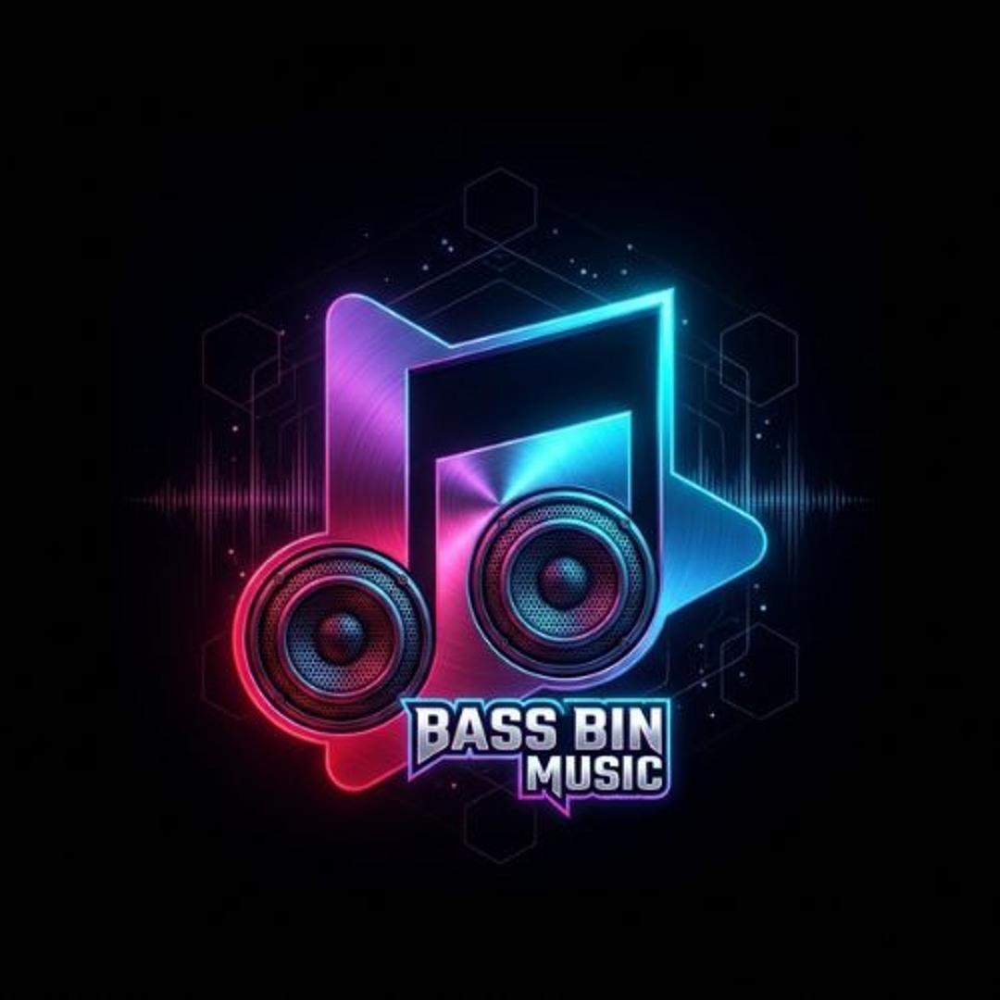

BASS BIN
MUSIC
Visualizer Studio
Offline browser demo · no account
Save JSON
↓ Export Video
◉
Studio
▣
Assets
✦
Effects
Composition preview
Canvas 2D + Web Audio API
1280 × 720
· 30 FPS
▶
00:00 / 00:20
↤
Composition layers
Live preview
♫ Audio track
Awaiting audio
◉ Spectrum
Audio-reactive
T Text overlay
Editable
✦ Effects
Glow, particles, zoom
Ready. Upload audio to watch the frequencies come alive.
◉ LOCAL-FIRST
Your music and imagery remain on this device.
·
Use only authorized media.
·
No subscription.